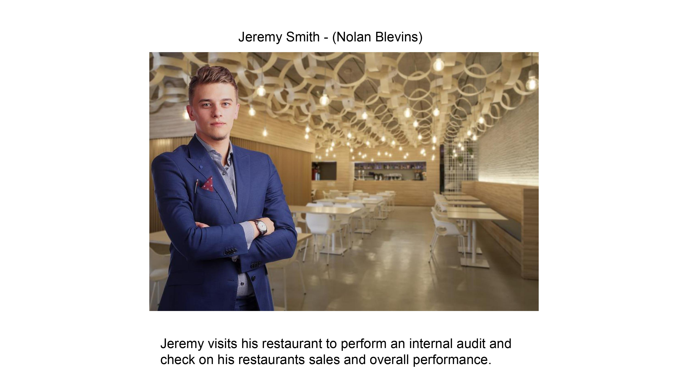
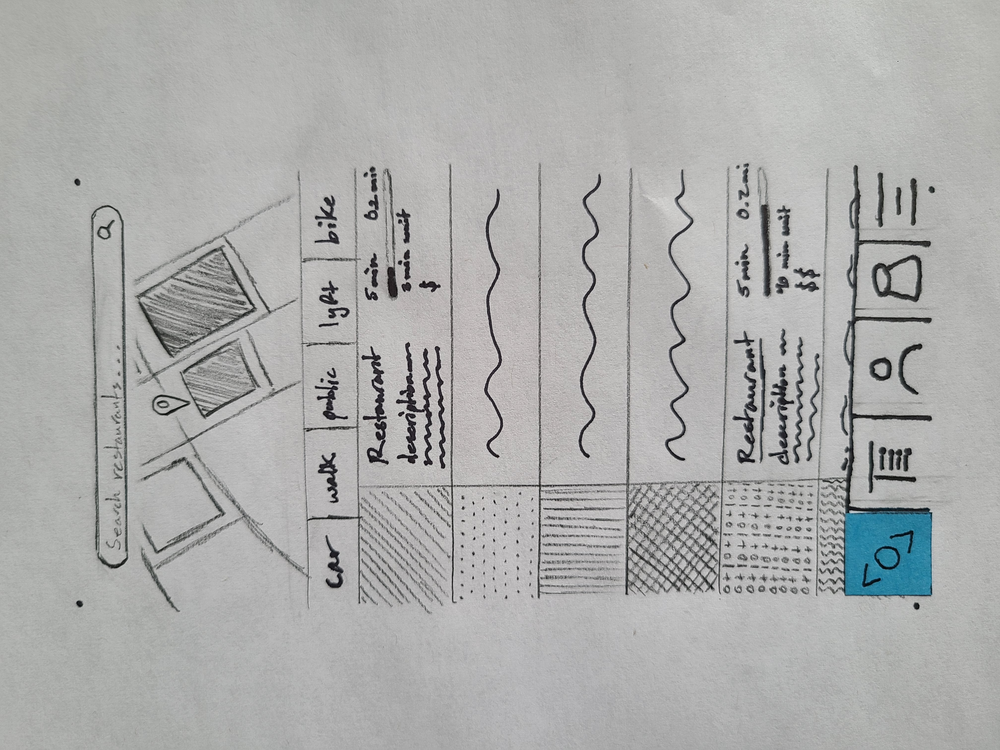
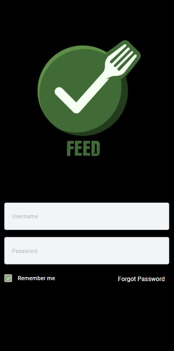

problem statement:

Too much time is wasted looking for places to eat, especially when it is a mutual decision. The wasted time can lead to irritability and an increase of negative emotions on top of the fact that this is usually accompanied by hunger.
affinity diagram

My group and I were brainstorming ideas to eliminate the long undecissive process of figuring out where someone wants to eat
Personnas

A Personna of normal Random Restaurant app users.
StoryBoard
Stories from different Food app users.
Sketches

Rough sketchs of the app layout and features..
Paper Prototype
a Paper walk through of the initial feed app design
High-fi Prototype
a general layout of the functionality of the feed app